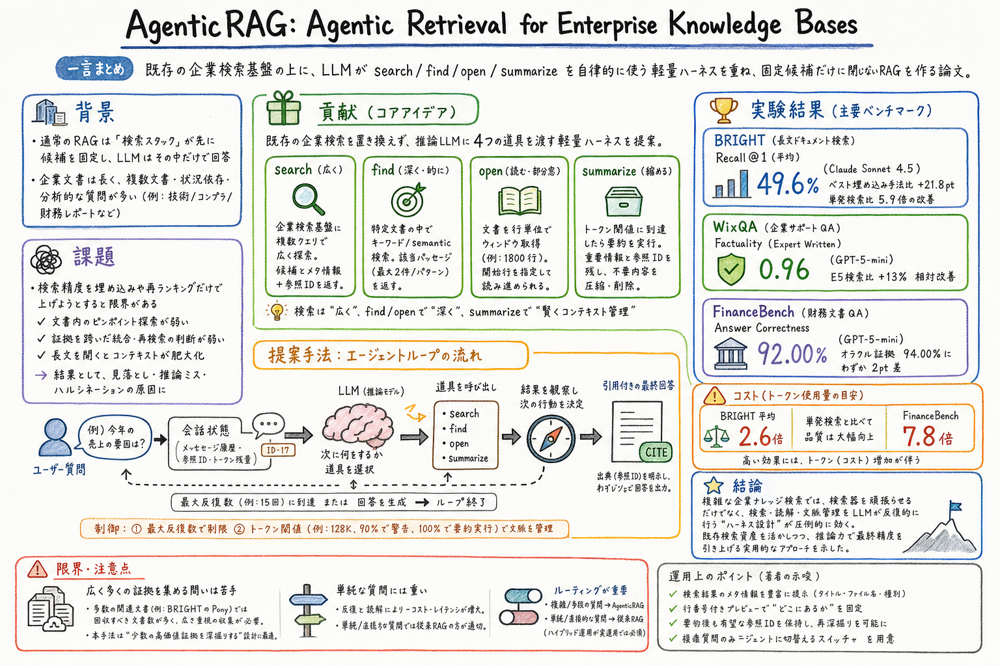

search は広い候補発見、find は文書内の狙い撃ち検索、open は行番号付きの全文窓読み、summarize は文脈圧縮を担う。

この論文の何がいいか
この論文の良さは、RAGの改善を埋め込みモデルや再ランキングだけに閉じず、LLMがどう検索結果を読み、次の検索行動を選び、文脈を維持するかというハーネス設計へ引き戻しているところにある。
企業ナレッジベースでは、質問が短くても、答えは複数の長文、表、節、ファイル名、用語の揺れにまたがることが多い。そこで検索器に最終精度まで背負わせるより、検索器は広く、LLMは深く読むという責務分担がかなり自然に見える。
実務に引きつけるなら、社内wiki、仕様書、ログ、財務資料、サポート記事を扱うAIアシスタントで、検索APIだけを足すのではなく、search / find / open / summarize のような小さな読み取り道具をどう設計するかの参考になる。
どんな論文か
通常のRAGは、検索スタックが先に候補集合を固定し、LLMはその中だけで回答する。この設計は、短いキーワード検索や高リコールな候補生成には強いが、企業内の長い文書、複数文書、状況依存、分析的な問いには弱い。
AgenticRAG は、検索エンジンそのものを置き換えない。既存の企業検索基盤を候補発見に使い、その上に推論LLMが search、find、open、summarize を使う軽量ハーネスを重ねる。
検索器は広く候補を出し、LLMは候補文書の中を探し、必要な範囲を開き、証拠が足りなければ検索を変える。文脈が膨らめば、重要な参照IDを保ったまま要約して続行する。
評価では、BRIGHT、WixQA、FinanceBench で強い結果を報告している。一方でトークンコストは増えるため、単純な質問は従来RAG、複雑な質問は AgenticRAG へ流すハイブリッド設計が実運用では重要になる。
AgenticRAG は、企業内の大規模ファイルシステムやナレッジベースに対して、推論LLMが反復的に証拠を集めて回答するためのエージェント型RAGハーネスである。
中心の問題意識は、従来のRAGでは検索過程の深いところで候補集合が固定され、LLMがその外へ探索し直せないこと。これにより、複数文書をまたぐ問い、長文内のピンポイント情報、分析的な質問で失敗しやすくなる。
著者らは、追加学習、専用埋め込み、知識グラフ構築、コーパス固有の前処理を前提にせず、既存の企業検索基盤へ推論時の道具ハーネスを重ねる。
課題と貢献
企業検索スタック、メタデータ、アクセス制御を活かし、検索器の上に推論LLMの反復読解を載せる。
BRIGHT、WixQA、FinanceBench で、従来検索や埋め込みベースラインより高い品質を示す。
検索結果にタイトル、ファイル名、ファイル種類を出すこと、行番号付きプレビューを返すこと、要約後も参照IDを残すこと、単純質問と複雑質問をルーティングすることを挙げている。
手法のしくみ
1
ユーザー質問を会話状態へ追加し、ハーネスが履歴、トークン使用量、参照IDマッピングを保持する。
2
LLMは回答に自信がない場合、search を使って企業検索基盤から候補文書を取得する。標準構成では1回の呼び出しで最大5個のクエリ書き換えを出せる。
3
候補のスニペットだけでは足りない場合、LLMは find で文書内の語句や概念を探す。収益指標、専門語、節名のように探す対象が見えている時に効く。
4
文書の文脈を広く読みたい場合、LLMは open で行番号付きの固定窓を読む。既定では1,800行単位で、必要なら開始行を変えて長い文書を移動する。
5
取得結果が増えて文脈が膨らむと、summarize が発火する。重要な参照IDを残し、それ以外の重い道具出力を落として、推論チェーンを続ける。
6
最大反復数に達するか、LLMが最終回答を出すとループが終わる。回答には根拠文書への引用を含める。
検証結果
Claude Sonnet 4.5 で平均 recall@1 49.6%、GPT-5-mini で 43.5%。最良の埋め込みベースライン Qwen 27.8%、最良の推論強化ベースライン ReDI 26.0% を大きく上回る。
Expert Written split で GPT-5-mini が factuality 0.96。E5 retrieval の 0.85、BM25 の 0.83 を上回る。Simulated split でも 0.94 を報告している。
GPT-5-mini で 92.00%、Claude Sonnet 4.5 で 91.78% の answer correctness。oracle evidence + GPT-5-mini の 94.00% に近い。
BRIGHT では単発検索の recall@1 8.41% から、Claude Sonnet 4.5 の AgenticRAG で 49.59% へ上がり、5.9倍の改善になる。
コスト。BRIGHT 平均では 52.3K tokens/query で、単発検索の 20.4K に対して 2.6倍。FinanceBench では 114.8K tokens/query で、単発検索比 7.8倍になる。
1回の search で複数クエリを出せる標準構成は、同程度の recall を少ない道具呼び出しで達成し、w/o Multi-query Search より平均 tool call を 6.79 から 4.79 へ減らす。
課題と議論
品質改善の代わりにトークンコストと遅延が増える。単純な質問まで全部 AgenticRAG に流す設計は重く、ルーティングが必要になる。
多数の関連文書を広く集める問いは苦手。BRIGHT の Pony split のように正解文書数が多い場合、少数の高価値証拠を深掘りする戦略だけでは足りない。
モデルごとに探索戦略が違う。Claude Sonnet 4.5 は search が少なく open / semantic find が多い深掘り型、GPT-5-mini は search が多い広め探索型として観察されている。
企業検索基盤の具体的な実装、アクセス制御、監査、データ漏洩対策の詳細は論文だけでは十分に分からない。実運用ではハーネス周辺の権限設計が別途必要になる。
次に読むなら
- まず Introduction と Method 3.1-3.4 を読むと、固定候補RAGから反復探索ハーネスへ移す問題設定がつかめる。
- 実験を見るなら Table 2、Table 3、Table 4、Table 5 を優先する。品質、コスト、除去実験がまとまっている。
- 関連して読むなら、Is Agentic RAG worth it?、Beyond Semantic Similarity、SIRA、Argus、Is Grep All You Need? を並べると、検索器単体ではなくハーネス込みで検索を見る流れが見える。
- 実装に落とすなら、search result のメタデータ、行番号付き open、文書内 find、参照ID保持、従来RAGとのルーティングを先に設計するとよい。
読後Q&A
普通のRAGと何が違う？
普通のRAGは検索結果を一度渡して答えさせることが多い。AgenticRAG は、LLMが search、find、open、summarize を反復して、足りない証拠を自分で取りに行く。
検索エンジンを置き換えるの？
置き換えない。既存の企業検索基盤を候補発見に使い、その上に推論LLMの道具利用ハーネスを重ねる設計になっている。
一番効いているのはどこ？
除去実験では、単発検索からエージェント型道具利用へ移ることが最も大きい。BRIGHT では recall@1 が 8.41% から 49.59% へ上がる。
find と open はどう使い分ける？
find は文書内で探す語句や概念が見えている時に使う。open は節や表の周辺など、文脈を広く読みたい時に行番号付きの窓として使う。
summarize は常に重要？
BRIGHT の除去実験では影響は小さい。ただし長い金融文書や長時間会話では、参照IDを残して重い道具出力を落とす仕組みとして重要になる。
どんな結果が出ている？
BRIGHT で平均 recall@1 49.6%、WixQA で factuality 0.96、FinanceBench で answer correctness 92.00% を報告している。
コストはどれくらい重い？
BRIGHT 平均で単発検索の 2.6倍、FinanceBench で 7.8倍のトークンを使う。複雑な質問には効くが、単純質問へ常時使うには重い。
苦手なケースは？
多数の関連文書を広く集めるケース。少数の高価値証拠を深掘りする設計なので、広範囲証拠収集が必要な問いでは探索方針の切り替えが必要になる。
実務ではどう使えばいい？
単純な質問は従来RAG、複雑・多意図・長文証拠が必要な質問は AgenticRAG へ流す。検索結果にはメタデータを出し、open は行番号付きにするとLLMが次の行動を選びやすい。
ゆうきさんのAIアシスタント運用に引くなら？
wikiやrepo検索に検索APIを足すだけでなく、検索、文書内探索、部分読み、文脈圧縮、参照ID保持をハーネスの道具として分ける発想が使える。